Slowburn turns weekly Claude and Codex limits into a calm daily pace. It shows how much you can use right now, saves up what you don't, and gently pauses your agents when you get ahead of the plan.
Free and open source (MIT) · macOS 14 or later · the interface is in Russian for now
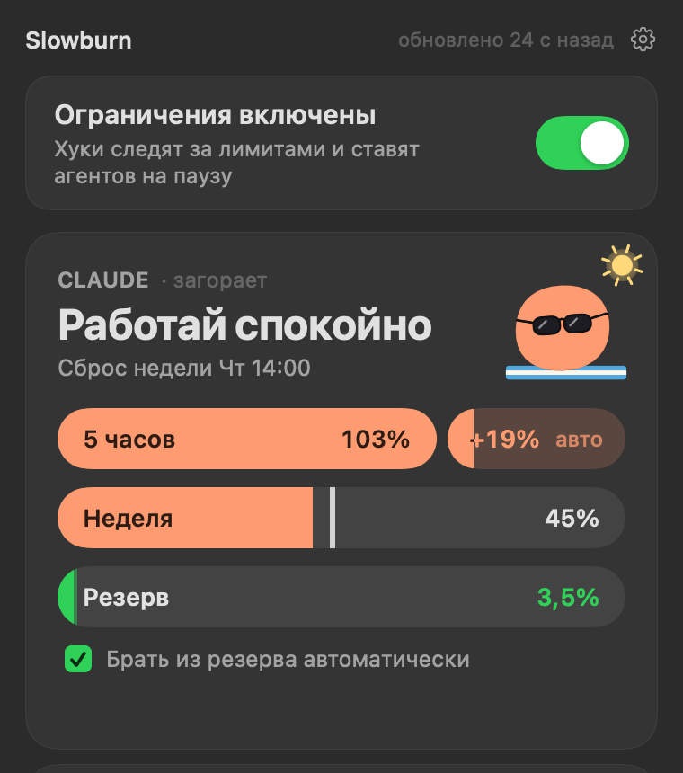
One ring in the menu bar. It empties as today's charge runs down.
Why
Claude and Codex give you a week of usage and a 5-hour window. Slowburn spreads that week into an even pace, so on Thursday you still have something left.
"You can work about 5 hours now" instead of "44% used". The plan earns a steady share every hour.
See how much the last five hours took, and exactly when the window frees up again.
Days you work less fill the reserve. Pour it into a heavy session with one click, or let it flow in automatically.
Through Claude Code and Codex hooks, agents pause when you are over the plan. You release them from the menu bar, or let them finish cleanly.
Deadline day? Turn every limit and hook off at once. Slowburn keeps counting, but nothing is held or warned about.
Reads what your CLIs already write on disk. Tokens are only read, never refreshed or sent anywhere else. No telemetry, no AI calls.
Companions
The orange one is Claude, the violet one is Codex. While an agent runs, its blob sits at the laptop and shows what the agent is busy with, read live from the session log. When the agent is idle, the blob picks one of forty pastimes.
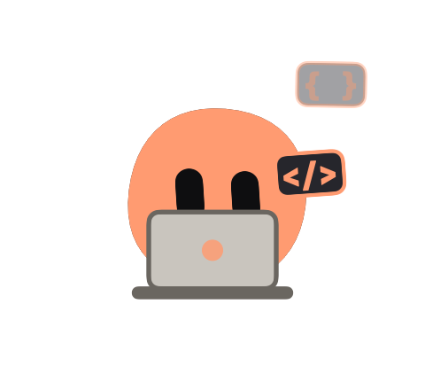
Workingediting code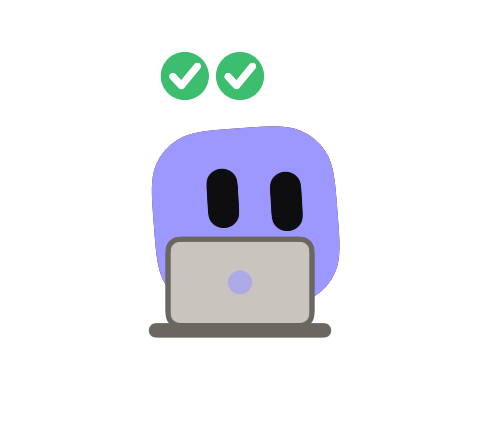
Workingrunning tests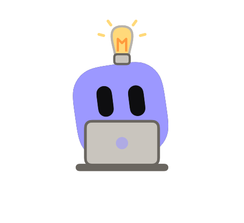
Workingthinking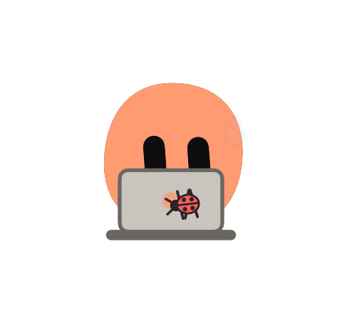
Workingfixing a failed step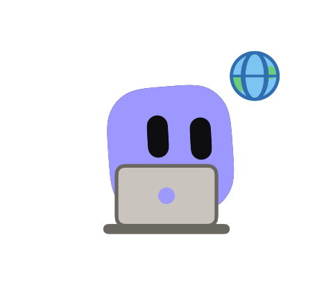
Workingsearching the web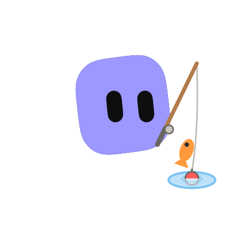
Restingfishing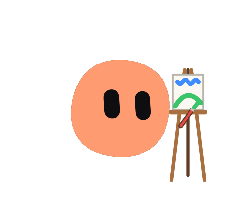
Restingpainting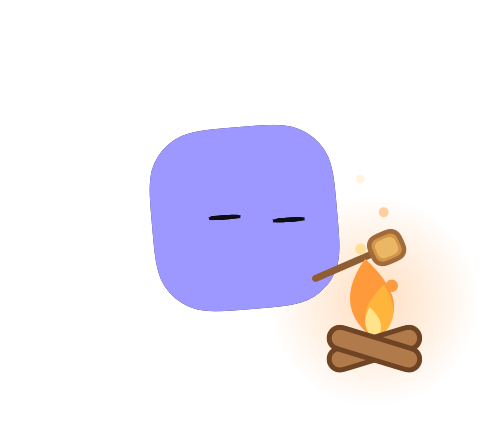
Restingroasting marshmallows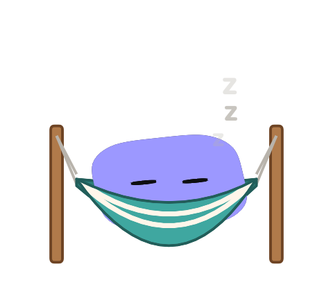
Restingnapping in a hammock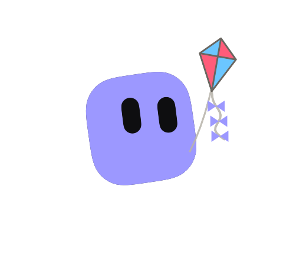
Restingflying a kite13 kinds of work and 40 pastimes. Their faces change with the budget: calm, charged, worried, paying for credits or fast asleep when the week is spent.
How it works
Slowburn rides on what Claude Code and Codex already keep on your Mac.
Weekly and 5-hour percentages from the same sources the official apps use, plus the session logs your CLIs write locally.
From the week's reset it earns an even share every hour, tracks today against it and forecasts whether the week will last.
Optional hooks pause a prompt or tool call when you are over plan. Release it in the menu bar, or start a message with ++ to go anyway.
Install
There is no signed download yet. You need macOS 14 and the Swift toolchain that comes with Xcode or the Command Line Tools.
quota uninstall-hooks removes only its own entries, with backups.# get the code git clone https://github.com/kdanet/slowburn cd slowburn # build and start the menu bar app swift build -c release .build/release/Slowburn & # optional: the soft brake for Claude Code and Codex .build/release/quota integrate claude codex # numbers in the terminal .build/release/quota status
Questions
No. It reads local files and asks the same usage endpoints the official CLIs use, with their existing tokens. It never refreshes or stores tokens, has no analytics and makes no AI calls.
Only if you install the hooks, and only when you are over plan. A held step waits for your decision in the menu bar. If you stop it, the agent is told to wrap up cleanly and describe where it stopped.
Then the hooks let everything through. Nothing can be held without the app there to release it.
Claude subscriptions used through Claude Code or the Claude app, and ChatGPT plans used through Codex. Codex credits are tracked too, so you see when work starts costing money.
No. Slowburn is an independent open-source project.